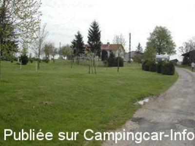
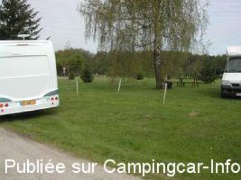

ASN = Aire de services avec stationnement nuit possible de :
ATTIGNY
(N° 224)
Accès/adresse :
D460
La Grange Brulée
88260 ATTIGNY
La Grange Brulée
88260 ATTIGNY
Latitude : (Nord) 48.05877° Décimaux ou 48° 3′ 31′′
Longitude : (Est) 6.00811° Décimaux ou 6° 0′ 29′′
Tarif : Gratuit
Type de borne : Autre
Services :


Produits de la ferme
Autres informations :
Ouvert toute l'année
5 emplacements
Aire privée dans une ferme
Tél : +33 (0) 329 093 054

Le 01/06/2008 par H MAIN

Le 01/06/2008 par H MAIN
de
emmanuel
le 10/01/2010 :
Je me suis arrêté par hasard chez Paul-Antoine. Il plantait des acacias, mon fils de 7 ans l'a aidé et pour le remercier, il lui a donné un pot de miel. Je remercie cette famille pour l'accueil. N'hésitez pas à vous y arrêter.
Je me suis arrêté par hasard chez Paul-Antoine. Il plantait des acacias, mon fils de 7 ans l'a aidé et pour le remercier, il lui a donné un pot de miel. Je remercie cette famille pour l'accueil. N'hésitez pas à vous y arrêter.
de
gautreau claude
le 23/09/2009 :
Nous sommes passés à proximité d'ATTIGNY et avons choisi de faire escale sur cette aire privée. Nous avons trouvé un accueil charmant. Paul Antoine (75 ans), n'étant pas camping-cariste, a eu cette excellente initiative d'accueillir des gens de passage, de mettre le principal à leur disposition gratuitement, sur un terrain très propre. nous le recommandons à tous les camping-caristes de passage dans le secteur. Merci beaucoup à cette famille!
Nous sommes passés à proximité d'ATTIGNY et avons choisi de faire escale sur cette aire privée. Nous avons trouvé un accueil charmant. Paul Antoine (75 ans), n'étant pas camping-cariste, a eu cette excellente initiative d'accueillir des gens de passage, de mettre le principal à leur disposition gratuitement, sur un terrain très propre. nous le recommandons à tous les camping-caristes de passage dans le secteur. Merci beaucoup à cette famille!
de
Sébi
le 03/05/2009 :
Le Propriétaire, " Paul Antoine ", est un monsieur charmant qui vous accueille comme si vous étiez de sa famille. Lait sortant du pis et miel vous sont proposés pour un prix plus que raisonnable. Pensez à donner les restes de pain, légumes ou fruits à la dame pour les animaux.
Le Propriétaire, " Paul Antoine ", est un monsieur charmant qui vous accueille comme si vous étiez de sa famille. Lait sortant du pis et miel vous sont proposés pour un prix plus que raisonnable. Pensez à donner les restes de pain, légumes ou fruits à la dame pour les animaux.
de
DJIDJI 77
le 16/02/2009 :
Effectivement l'aire de services se trouve sur une propriété privéee, c'est un accueillant FRANCE PASSION.
Effectivement l'aire de services se trouve sur une propriété privéee, c'est un accueillant FRANCE PASSION.
de
h MAIN
le 01/06/2008 :
Attention, vous êtes sur une propriété privée, un fermier vous accueille, de nombreux panneaux sur les routes du voisinage vous conduisent ici... Cette ferme est en pleine nature, le stationnement a lieu sur l'herbe d'un terrain en pente. Pour les services, ils se trouvent dans la cour de la ferme, au fond du chemin. Il ne semble pas y avoir de branchement électrique. Les produits de la ferme vous seront certainement proposés (miel).
Attention, vous êtes sur une propriété privée, un fermier vous accueille, de nombreux panneaux sur les routes du voisinage vous conduisent ici... Cette ferme est en pleine nature, le stationnement a lieu sur l'herbe d'un terrain en pente. Pour les services, ils se trouvent dans la cour de la ferme, au fond du chemin. Il ne semble pas y avoir de branchement électrique. Les produits de la ferme vous seront certainement proposés (miel).